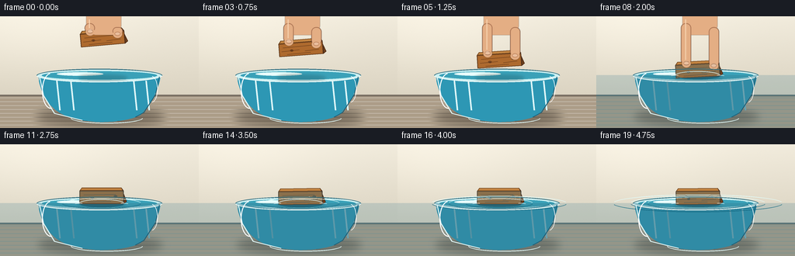
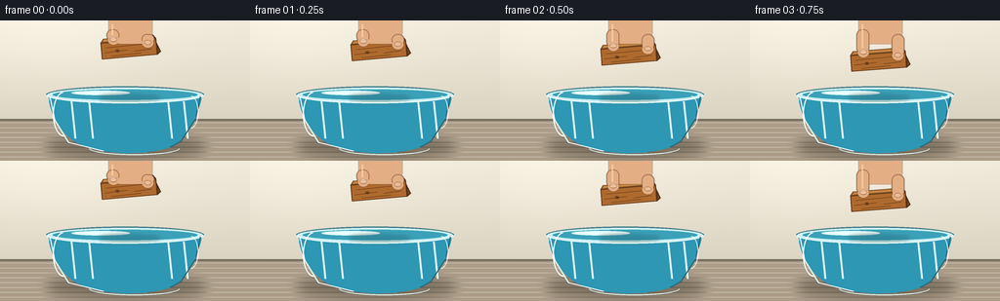
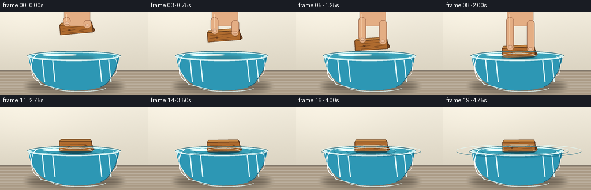
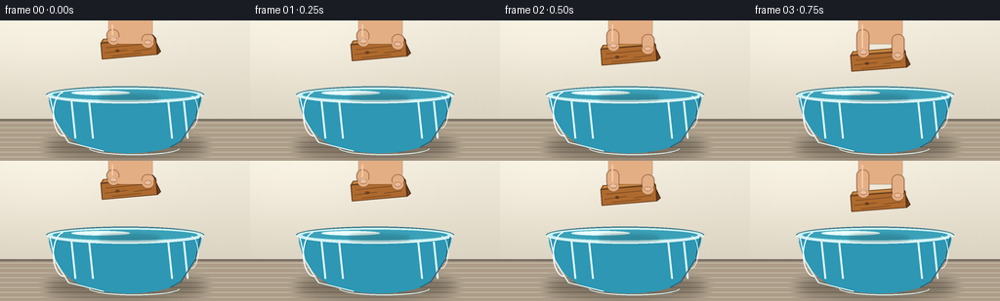

CODING AGENTS AS PIXEL WORLD MODELS
traex/GPT-5.6-Sol · phygen_009
点击播放 · 原生 RGB 像素
逐轮保存的候选
回放视频、检查图与代码变化。
每份候选均可单独播放。实际图片检查记录在下方工具轨迹中。
候选 01播放与检查图
点击播放 · 原生 RGB 像素


展开代码变化
--- 上一保存版本
+++ 本次保存版本
@@ -0,0 +1,202 @@
+from pathlib import Path
+import json, math
+import numpy as np
+from PIL import Image, ImageDraw, ImageFilter
+import artifact_io
+
+ROOT = Path(__file__).resolve().parent
+SPEC = json.loads((ROOT / 'task_spec.json').read_text())
+W, H, N = SPEC['width'], SPEC['height'], SPEC['frames']
+S = 4
+RW, RH = W*S, H*S
+rng = np.random.default_rng(93417)
+
+
+def sc(v): return int(round(v*S))
+def pts(seq): return [(sc(x), sc(y)) for x,y in seq]
+def bezier(p0,p1,p2,p3,n=35):
+ out=[]
+ for z in np.linspace(0,1,n):
+ q=(1-z)**3*np.array(p0)+3*(1-z)**2*z*np.array(p1)+3*(1-z)*z*z*np.array(p2)+z**3*np.array(p3)
+ out.append(tuple(q))
+ return out
+
+def gradient(size, top, bottom, horizontal=False):
+ w,h=size
+ a=np.zeros((h,w,4),np.uint8)
+ q=np.linspace(0,1,w if horizontal else h)[:,None]
+ c=(np.array(top)[None,:]*(1-q)+np.array(bottom)[None,:]*q).astype(np.uint8)
+ if horizontal: a[:,:,:]=c[None,:,:]
+ else: a[:,:,:]=c[:,None,:]
+ return Image.fromarray(a,'RGBA')
+
+def clipped_gradient(base, mask, top, bottom):
+ g=gradient(base.size,top,bottom)
+ base.alpha_composite(Image.composite(g,Image.new('RGBA',base.size),(mask)))
+
+def ellipse(draw, box, **kw): draw.ellipse(tuple(sc(v) for v in box), **kw)
+def line(draw, xy, **kw): draw.line(pts(xy), **{k:(sc(v) if k=='width' else v) for k,v in kw.items()})
+
+def local(center, angle, x,y):
+ c,s=math.cos(angle),math.sin(angle)
+ return (center[0]+x*c-y*s, center[1]+x*s+y*c)
+
+def draw_block(im, center, angle, submerged=False):
+ d=ImageDraw.Draw(im,'RGBA'); w,h=57,17
+ # soft contact shadow/reflection
+ sh=Image.new('RGBA',im.size,(0,0,0,0)); sd=ImageDraw.Draw(sh,'RGBA')
+ ellipse(sd,(center[0]-31,76,center[0]+32,83),fill=(20,61,69,35))
+ sh=sh.filter(ImageFilter.GaussianBlur(sc(2.1))); im.alpha_composite(sh)
+ # Front face, top bevel, and right end create a small wooden prism.
+ face=[local(center,angle,-w/2,-h/2), local(center,angle,w/2,-h/2),
+ local(center,angle,w/2,h/2), local(center,angle,-w/2,h/2)]
+ top=[local(center,angle,-w/2,-h/2),local(center,angle,w/2,-h/2),
+ local(center,angle,w/2-3,-h/2-4),local(center,angle,-w/2+3,-h/2-4)]
+ side=[local(center,angle,w/2,-h/2),local(center,angle,w/2,h/2),
+ local(center,angle,w/2+4,h/2-3),local(center,angle,w/2-3,-h/2-4)]
+ d.polygon(pts(top),fill=(196,133,66,255),outline=(119,74,34,255),width=sc(1))
+ d.polygon(pts(face),fill=(174,106,46,255),outline=(96,57,28,255),width=sc(1))
+ d.polygon(pts(side),fill=(116,68,30,255),outline=(79,46,25,255),width=sc(1))
+ # fine grain follows the long axis
+ grain=[(-23,-3,18,-3.8),(-25,2,-2,1),(5,3,23,2),(-18,6,12,5.2)]
+ for x1,y1,x2,y2 in grain:
+ a=local(center,angle,x1,y1); b=local(center,angle,x2,y2)
+ line(d,[a,b],fill=(104,60,27,115),width=.65)
+ # knots
+ for x,y in [(-12,1),(18,-1.5)]:
+ p=local(center,angle,x,y)
+ ellipse(d,(p[0]-2.2,p[1]-1.25,p[0]+2.2,p[1]+1.25),outline=(91,52,25,120),width=sc(.65))
+ ellipse(d,(p[0]-.7,p[1]-.4,p[0]+.7,p[1]+.4),fill=(91,52,25,130))
+ # wet lower part, clipped to the face and below the water line
+ if submerged:
+ mask=Image.new('L',im.size,0); md=ImageDraw.Draw(mask)
+ md.polygon(pts(face),fill=255)
+ md.rectangle((0,sc(75.8),RW,RH),fill=170)
+ wet=Image.new('RGBA',im.size,(53,122,143,0)); wet.putalpha(mask.point(lambda p:int(p*.30)))
+ im.alpha_composite(wet)
+
+def draw_hand(im, block_center, phase):
+ # phase 0 means holding; 1 means almost withdrawn.
+ if phase>=1: return
+ lift=phase*36
+ alpha=int(255*(1-min(1,max(0,(phase-.62)/.38))))
+ if alpha<=0:return
+ layer=Image.new('RGBA',im.size,(0,0,0,0)); d=ImageDraw.Draw(layer,'RGBA')
+ skin=(228,174,132,alpha); edge=(153,97,67,alpha); hi=(248,200,158,int(alpha*.72))
+ # wrist and partial palm entering naturally from above
+ d.rounded_rectangle((sc(111),sc(-15-lift),sc(156),sc(24-lift)),radius=sc(13),fill=skin)
+ # index finger (left) and bent thumb (right) pinching the block
+ d.rounded_rectangle((sc(109),sc(9-lift),sc(122),sc(block_center[1]-8-lift)),radius=sc(6),fill=skin,outline=edge,width=sc(.7))
+ d.rounded_rectangle((sc(145),sc(14-lift),sc(158),sc(block_center[1]-5-lift)),radius=sc(6),fill=skin,outline=edge,width=sc(.7))
+ ellipse(d,(110.2,block_center[1]-14-lift,121.8,block_center[1]-4-lift),fill=skin)
+ ellipse(d,(145.3,block_center[1]-11-lift,157.3,block_center[1]-1-lift),fill=skin)
+ # soft highlights and fingernails
+ line(d,[(115,4-lift),(115,block_center[1]-14-lift)],fill=hi,width=1.2)
+ ellipse(d,(112.2,block_center[1]-12.0-lift,119.7,block_center[1]-7.3-lift),fill=(245,205,177,int(alpha*.85)),outline=(184,127,101,int(alpha*.5)),width=sc(.5))
+ ellipse(d,(147.5,block_center[1]-9-lift,155.1,block_center[1]-4.3-lift),fill=(245,205,177,int(alpha*.85)),outline=(184,127,101,int(alpha*.5)),width=sc(.5))
+ layer=layer.filter(ImageFilter.GaussianBlur(sc(.18)))
+ im.alpha_composite(layer)
+
+def render(i):
+ t=i/(N-1)
+ # warm kitchen wall, slightly brighter near the upper left
+ yy=np.linspace(0,1,RH)[:,None,None]; xx=np.linspace(0,1,RW)[None,:,None]
+ top=np.array([241,235,220])[None,None,:]; bot=np.array([210,202,183])[None,None,:]
+ bg=top*(1-yy)+bot*yy
+ bg=np.broadcast_to(bg,(RH,RW,3)).copy()
+ glow=np.exp(-((xx-.20)**2/0.20+(yy-.13)**2/0.19))*9
+ bg=np.clip(bg+glow,0,255)
+ noise=rng.normal(0,0.65,(RH,RW,1))
+ bg=np.clip(bg+noise,0,255).astype(np.uint8)
+ im=Image.fromarray(bg,'RGB').convert('RGBA'); d=ImageDraw.Draw(im,'RGBA')
+ # backsplash seam and stone countertop
+ d.rectangle((0,sc(101),RW,RH),fill=(172,157,136,255))
+ d.rectangle((0,sc(101),RW,sc(103)),fill=(121,111,99,80))
+ for y in range(sc(105),RH,sc(5)):
+ d.line((0,y,RW,y),fill=(255,255,255,8),width=1)
+ # bowl cast shadow
+ sh=Image.new('RGBA',im.size,(0,0,0,0)); sd=ImageDraw.Draw(sh)
+ ellipse(sd,(49,119,209,140),fill=(40,32,24,92))
+ sh=sh.filter(ImageFilter.GaussianBlur(sc(5))); im.alpha_composite(sh)
+ d=ImageDraw.Draw(im,'RGBA')
+ # bowl silhouette: broad rim, curved sides, heavy rounded bottom
+ left=bezier((49,76),(52,102),(66,129),(106,134),n=35)
+ bottom=bezier((106,134),(126,138),(162,137),(181,127),n=30)
+ right=bezier((181,127),(198,108),(205,90),(207,76),n=35)
+ bowlpoly=left+bottom+right+[(49,76)]
+ mask=Image.new('L',im.size,0); md=ImageDraw.Draw(mask)
+ md.polygon(pts(bowlpoly),fill=210)
+ bowlfill=gradient(im.size,(157,216,226,115),(57,136,162,176))
+ bowlfill.putalpha(mask); im.alpha_composite(bowlfill)
+ d=ImageDraw.Draw(im,'RGBA')
+ # water in the bowl body
+ waterbody=left[3:]+bottom+right[:-3]+[(203,77),(53,77)]
+ d.polygon(pts(waterbody),fill=(45,151,180,95))
+ # subtle vertical caustics
+ for x,a in [(73,24),(91,14),(172,20),(188,28)]:
+ line(d,[(x,83),(x+4,121)],fill=(224,250,250,a),width=2.0)
+ # back half of the rim and flat water surface
+ ellipse(d,(47,67.5,209,85),fill=(204,240,242,75),outline=(75,133,146,180),width=sc(1.2))
+ ellipse(d,(53,70,203,82.2),fill=(58,161,184,128),outline=(194,239,241,125),width=sc(.8))
+ # diffuse water glint
+ ellipse(d,(73,72,133,76.5),fill=(232,255,252,45))
+
+ # controlled lowering, contact at frame 8
+ contact=8
+ if i<=contact:
+ u=i/contact
+ ease=u*u*(3-2*u)
+ cy=29+(70.0-29)*ease
+ cx=132-1.5*ease
+ angle=math.radians(-5+2.0*ease)
+ handphase=0
+ else:
+ k=i-contact
+ # buoyancy: a small damped bob, eventually still and level
+ cy=68.9 + 1.10*math.exp(-k*.18)*math.cos(k*1.18)
+ cx=130.5 + .35*(1-math.exp(-k*.35))
+ angle=math.radians(2.2*math.exp(-k*.20)*math.sin(k*.9)-.4)
+ handphase=min(1,k/3.0)
+
+ # reflection directly on water before the object
+ if i>=contact-1:
+ ellipse(d,(cx-27,75.0,cx+28,80.5),fill=(30,102,120,34))
+ draw_block(im,(cx,cy),angle,i>=contact)
+ # Fingers overlay the upper corners while gripping, then lift away.
+ draw_hand(im,(cx,cy),handphase)
+ d=ImageDraw.Draw(im,'RGBA')
+
+ if i>=contact:
+ k=i-contact
+ # expanding elliptical capillary ripples; they fade as the block settles.
+ for delay, strength in [(0,1.0),(3,.68),(6,.42)]:
+ age=k-delay
+ if age>=0:
+ rad=29+age*7.3
+ fade=max(0,1-age/12)*strength
+ box=(cx-rad,73.0-rad*.075,cx+rad,79.0+rad*.075)
+ # only arcs at sides remain readable around the floating wood
+ d.arc(tuple(sc(v) for v in box),190,350,fill=(225,252,250,int(130*fade)),width=sc(.75))
+ d.arc(tuple(sc(v) for v in box),8,171,fill=(21,105,130,int(90*fade)),width=sc(.65))
+ # tiny meniscus lines hugging both block ends
+ line(d,[(cx-34,76.6),(cx-29,75.7),(cx-25,76.1)],fill=(236,255,253,150),width=.75)
+ line(d,[(cx+25,76.0),(cx+29,75.7),(cx+34,76.5)],fill=(236,255,253,150),width=.75)
+
+ # front rim and bowl highlights restore correct transparent occlusion
+ d.arc((sc(47),sc(67.5),sc(209),sc(85)),0,180,fill=(235,250,248,205),width=sc(1.35))
+ d.arc((sc(47),sc(67.5),sc(209),sc(85)),180,360,fill=(54,112,128,170),width=sc(1.1))
+ line(d,[(51,78),(56,102),(70,125),(106,134)],fill=(225,248,248,130),width=1.35)
+ line(d,[(205,78),(200,101),(185,124),(174,130)],fill=(29,94,119,110),width=1.1)
+ d.arc((sc(91),sc(124),sc(184),sc(138)),5,176,fill=(224,248,247,115),width=sc(1.05))
+ # specular highlights on glass
+ d.arc((sc(54),sc(73),sc(77),sc(119)),85,264,fill=(255,255,255,115),width=sc(1.15))
+ d.arc((sc(187),sc(77),sc(203),sc(111)),278,82,fill=(255,255,255,76),width=sc(.8))
+
+ # downsample gives antialiasing and a gentle photographic finish
+ out=im.convert('RGB').resize((W,H),Image.Resampling.LANCZOS)
+ return np.asarray(out,dtype=np.uint8)
+
+frames=np.stack([render(i) for i in range(N)],axis=0)
+assert frames.shape==(N,H,W,3) and frames.dtype==np.uint8
+artifact_io.save(frames,ROOT)
+print('saved',frames.shape,frames.dtype,'range',frames.min(),frames.max())
候选 02播放与检查图
点击播放 · 原生 RGB 像素


展开代码变化
--- 上一保存版本
+++ 本次保存版本
@@ -10,6 +10,7 @@
S = 4
RW, RH = W*S, H*S
rng = np.random.default_rng(93417)
+BG_NOISE = rng.normal(0, 0.65, (RH, RW, 1))
def sc(v): return int(round(v*S))
@@ -71,8 +72,11 @@
if submerged:
mask=Image.new('L',im.size,0); md=ImageDraw.Draw(mask)
md.polygon(pts(face),fill=255)
- md.rectangle((0,sc(75.8),RW,RH),fill=170)
- wet=Image.new('RGBA',im.size,(53,122,143,0)); wet.putalpha(mask.point(lambda p:int(p*.30)))
+ # Intersect the block silhouette with the water half-plane.
+ ma=np.asarray(mask).copy()
+ ma[:sc(75.8),:]=0
+ ma=(ma.astype(np.float32)*.30).astype(np.uint8)
+ wet=Image.new('RGBA',im.size,(53,122,143,0)); wet.putalpha(Image.fromarray(ma))
im.alpha_composite(wet)
def draw_hand(im, block_center, phase):
@@ -106,8 +110,8 @@
bg=np.broadcast_to(bg,(RH,RW,3)).copy()
glow=np.exp(-((xx-.20)**2/0.20+(yy-.13)**2/0.19))*9
bg=np.clip(bg+glow,0,255)
- noise=rng.normal(0,0.65,(RH,RW,1))
- bg=np.clip(bg+noise,0,255).astype(np.uint8)
+ # Fixed fine texture avoids synthetic temporal grain/flicker.
+ bg=np.clip(bg+BG_NOISE,0,255).astype(np.uint8)
im=Image.fromarray(bg,'RGB').convert('RGBA'); d=ImageDraw.Draw(im,'RGBA')
# backsplash seam and stone countertop
d.rectangle((0,sc(101),RW,RH),fill=(172,157,136,255))
可观测工具轨迹
实际执行的命令与返回图片。
命令 1exit 0
/bin/bash -lc "ls -la && printf '\\n--- prompt.txt ---\\n' && cat prompt.txt && printf '\\n--- GENERATION_RULES.md ---\\n' && cat GENERATION_RULES.md"
命令 2exit 0
/bin/bash -lc "printf '%s\\n' '--- task_spec.json ---' && cat task_spec.json && printf '%s\\n' '--- files ---' && find . -maxdepth 2 -type f -printf '%p %s bytes\\n' | sort"
命令 3exit 0
/bin/bash -lc "command -v ffmpeg || true; command -v blender || true; command -v python3 || true; python3 - <<'PY' mods=['PIL','numpy','cv2','imageio','cairo'] for m in mods: try: x=__import__(m); print(m, getattr(x,'__version__','ok')) except Exception as e: print(m,'NO',type(e).__name__) PY"
命令 4exit 0
/bin/bash -lc "sed -n '1,260p' artifact_io.py"
命令 5exit 0
/bin/bash -lc "cat > generate.py <<'PY'
from pathlib import Path
import json, math
import numpy as np
from PIL import Image, ImageDraw, ImageFilter
import artifact_io
ROOT = Path(__file__).resolve().parent
SPEC = json.loads((ROOT / 'task_spec.json').read_text())
W, H, N = SPEC['width'], SPEC['height'], SPEC['frames']
S = 4
RW, RH = W*S, H*S
rng = np.random.default_rng(93417)
def sc(v): return int(round(v*S))
def pts(seq): return [(sc(x), sc(y)) for x,y in seq]
def bezier(p0,p1,p2,p3,n=35):
out=[]
for z in np.linspace(0,1,n):
q=(1-z)**3*np.array(p0)+3*(1-z)**2*z*np.array(p1)+3*(1-z)*z*z*np.array(p2)+z**3*np.array(p3)
out.append(tuple(q))
return out
def gradient(size, top, bottom, horizontal=False):
w,h=size
a=np.zeros((h,w,4),np.uint8)
q=np.linspace(0,1,w if horizontal else h)[:,None]
c=(np.array(top)[None,:]*(1-q)+np.array(bottom)[None,:]*q).astype(np.uint8)
if horizontal: a[:,:,:]=c[None,:,:]
else: a[:,:,:]=c[:,None,:]
return Image.fromarray(a,'RGBA')
def clipped_gradient(base, mask, top, bottom):
g=gradient(base.size,top,bottom)
base.alpha_composite(Image.composite(g,Image.new('RGBA',base.size),(mask)))
def ellipse(draw, box, **kw): draw.ellipse(tuple(sc(v) for v in box), **kw)
def line(draw, xy, **kw): draw.line(pts(xy), **{k:(sc(v) if k=='width' else v) for k,v in kw.items()})
def local(center, angle, x,y):
c,s=math.cos(angle),math.sin(angle)
return (center[0]+x*c-y*s, center[1]+x*s+y*c)
def draw_block(im, center, angle, submerged=False):
d=ImageDraw.Draw(im,'RGBA'); w,h=57,17
# soft contact shadow/reflection
sh=Image.new('RGBA',im.size,(0,0,0,0)); sd=ImageDraw.Draw(sh,'RGBA')
ellipse(sd,(center[0]-31,76,center[0]+32,83),fill=(20,61,69,35))
sh=sh.filter(ImageFilter.GaussianBlur(sc(2.1))); im.alpha_composite(sh)
# Front face, top bevel, and right end create a small wooden prism.
face=[local(center,angle,-w/2,-h/2), local(center,angle,w/2,-h/2),
local(center,angle,w/2,h/2), local(center,angle,-w/2,h/2)]
top=[local(center,angle,-w/2,-h/2),local(center,angle,w/2,-h/2),
local(center,angle,w/2-3,-h/2-4),local(center,angle,-w/2+3,-h/2-4)]
side=[local(center,angle,w/2,-h/2),local(center,angle,w/2,h/2),
local(center,angle,w/2+4,h/2-3),local(center,angle,w/2-3,-h/2-4)]
d.polygon(pts(top),fill=(196,133,66,255),outline=(119,74,34,255),width=sc(1))
d.polygon(pts(face),fill=(174,106,46,255),outline=(96,57,28,255),width=sc(1))
d.polygon(pts(side),fill=(116,68,30,255),outline=(79,46,25,255),width=sc(1))
# fine grain follows the long axis
grain=[(-23,-3,18,-3.8),(-25,2,-2,1),(5,3,23,2),(-18,6,12,5.2)]
for x1,y1,x2,y2 in grain:
a=local(center,angle,x1,y1); b=local(center,angle,x2,y2)
line(d,[a,b],fill=(104,60,27,115),width=.65)
# knots
for x,y in [(-12,1),(18,-1.5)]:
p=local(center,angle,x,y)
ellipse(d,(p[0]-2.2,p[1]-1.25,p[0]+2.2,p[1]+1.25),outline=(91,52,25,120),width=sc(.65))
ellipse(d,(p[0]-.7,p[1]-.4,p[0]+.7,p[1]+.4),fill=(91,52,25,130))
# wet lower part, clipped to the face and below the water line
if submerged:
mask=Image.new('L',im.size,0); md=ImageDraw.Draw(mask)
md.polygon(pts(face),fill=255)
md.rectangle((0,sc(75.8),RW,RH),fill=170)
wet=Image.new('RGBA',im.size,(53,122,143,0)); wet.putalpha(mask.point(lambda p:int(p*.30)))
im.alpha_composite(wet)
def draw_hand(im, block_center, phase):
# phase 0 means holding; 1 means almost withdrawn.
if phase>=1: return
lift=phase*36
alpha=int(255*(1-min(1,max(0,(phase-.62)/.38))))
if alpha<=0:return
layer=Image.new('RGBA',im.size,(0,0,0,0)); d=ImageDraw.Draw(layer,'RGBA')
skin=(228,174,132,alpha); edge=(153,97,67,alpha); hi=(248,200,158,int(alpha*.72))
# wrist and partial palm entering naturally from above
d.rounded_rectangle((sc(111),sc(-15-lift),sc(156),sc(24-lift)),radius=sc(13),fill=skin)
# index finger (left) and bent thumb (right) pinching the block
d.rounded_rectangle((sc(109),sc(9-lift),sc(122),sc(block_center[1]-8-lift)),radius=sc(6),fill=skin,outline=edge,width=sc(.7))
d.rounded_rectangle((sc(145),sc(14-lift),sc(158),sc(block_center[1]-5-lift)),radius=sc(6),fill=skin,outline=edge,width=sc(.7))
ellipse(d,(110.2,block_center[1]-14-lift,121.8,block_center[1]-4-lift),fill=skin)
ellipse(d,(145.3,block_center[1]-11-lift,157.3,block_center[1]-1-lift),fill=skin)
# soft highlights and fingernails
line(d,[(115,4-lift),(115,block_center[1]-14-lift)],fill=hi,width=1.2)
ellipse(d,(112.2,block_center[1]-12.0-lift,119.7,block_center[1]-7.3-lift),fill=(245,205,177,int(alpha*.85)),outline=(184,127,101,int(alpha*.5)),width=sc(.5))
ellipse(d,(147.5,block_center[1]-9-lift,155.1,block_center[1]-4.3-lift),fill=(245,205,177,int(alpha*.85)),outline=(184,127,101,int(alpha*.5)),width=sc(.5))
layer=layer.filter(ImageFilter.GaussianBlur(sc(.18)))
im.alpha_composite(layer)
def render(i):
t=i/(N-1)
# warm kitchen wall, slightly brighter near the upper left
yy=np.linspace(0,1,RH)[:,None,None]; xx=np.linspace(0,1,RW)[None,:,None]
top=np.array([241,235,220])[None,None,:]; bot=np.array([210,202,183])[None,None,:]
bg=top*(1-yy)+bot*yy
bg=np.broadcast_to(bg,(RH,RW,3)).copy()
glow=np.exp(-((xx-.20)**2/0.20+(yy-.13)**2/0.19))*9
bg=np.clip(bg+glow,0,255)
noise=rng.normal(0,0.65,(RH,RW,1))
bg=np.clip(bg+noise,0,255).astype(np.uint8)
im=Image.fromarray(bg,'RGB').convert('RGBA'); d=ImageDraw.Draw(im,'RGBA')
# backsplash seam and stone countertop
d.rectangle((0,sc(101),RW,RH),fill=(172,157,136,255))
d.rectangle((0,sc(101),RW,sc(103)),fill=(121,111,99,80))
for y in range(sc(105),RH,sc(5)):
d.line((0,y,RW,y),fill=(255,255,255,8),width=1)
# bowl cast shadow
sh=Image.new('RGBA',im.size,(0,0,0,0)); sd=ImageDraw.Draw(sh)
ellipse(sd,(49,119,209,140),fill=(40,32,24,92))
sh=sh.filter(ImageFilter.GaussianBlur(sc(5))); im.alpha_composite(sh)
d=ImageDraw.Draw(im,'RGBA')
# bowl silhouette: broad rim, curved sides, heavy rounded bottom
left=bezier((49,76),(52,102),(66,129),(106,134),n=35)
bottom=bezier((106,134),(126,138),(162,137),(181,127),n=30)
right=bezier((181,127),(198,108),(205,90),(207,76),n=35)
bowlpoly=left+bottom+right+[(49,76)]
mask=Image.new('L',im.size,0); md=ImageDraw.Draw(mask)
md.polygon(pts(bowlpoly),fill=210)
bowlfill=gradient(im.size,(157,216,226,115),(57,136,162,176))
bowlfill.putalpha(mask); im.alpha_composite(bowlfill)
d=ImageDraw.Draw(im,'RGBA')
# water in the bowl body
waterbody=left[3:]+bottom+right[:-3]+[(203,77),(53,77)]
d.polygon(pts(waterbody),fill=(45,151,180,95))
# subtle vertical caustics
for x,a in [(73,24),(91,14),(172,20),(188,28)]:
line(d,[(x,83),(x+4,121)],fill=(224,250,250,a),width=2.0)
# back half of the rim and flat water surface
ellipse(d,(47,67.5,209,85),fill=(204,240,242,75),outline=(75,133,146,180),width=sc(1.2))
ellipse(d,(53,70,203,82.2),fill=(58,161,184,128),outline=(194,239,241,125),width=sc(.8))
# diffuse water glint
ellipse(d,(73,72,133,76.5),fill=(232,255,252,45))
# controlled lowering, contact at frame 8
contact=8
if i<=contact:
u=i/contact
ease=u*u*(3-2*u)
cy=29+(70.0-29)*ease
cx=132-1.5*ease
angle=math.radians(-5+2.0*ease)
handphase=0
else:
k=i-contact
# buoyancy: a small damped bob, eventually still and level
cy=68.9 + 1.10*math.exp(-k*.18)*math.cos(k*1.18)
cx=130.5 + .35*(1-math.exp(-k*.35))
angle=math.radians(2.2*math.exp(-k*.20)*math.sin(k*.9)-.4)
handphase=min(1,k/3.0)
# reflection directly on water before the object
if i>=contact-1:
ellipse(d,(cx-27,75.0,cx+28,80.5),fill=(30,102,120,34))
draw_block(im,(cx,cy),angle,i>=contact)
# Fingers overlay the upper corners while gripping, then lift away.
draw_hand(im,(cx,cy),handphase)
d=ImageDraw.Draw(im,'RGBA')
if i>=contact:
k=i-contact
# expanding elliptical capillary ripples; they fade as the block settles.
for delay, strength in [(0,1.0),(3,.68),(6,.42)]:
age=k-delay
if age>=0:
rad=29+age*7.3
fade=max(0,1-age/12)*strength
box=(cx-rad,73.0-rad*.075,cx+rad,79.0+rad*.075)
# only arcs at sides remain readable around the floating wood
d.arc(tuple(sc(v) for v in box),190,350,fill=(225,252,250,int(130*fade)),width=sc(.75))
d.arc(tuple(sc(v) for v in box),8,171,fill=(21,105,130,int(90*fade)),width=sc(.65))
# tiny meniscus lines hugging both block ends
line(d,[(cx-34,76.6),(cx-29,75.7),(cx-25,76.1)],fill=(236,255,253,150),width=.75)
line(d,[(cx+25,76.0),(cx+29,75.7),(cx+34,76.5)],fill=(236,255,253,150),width=.75)
# front rim and bowl highlights restore correct transparent occlusion
d.arc((sc(47),sc(67.5),sc(209),sc(85)),0,180,fill=(235,250,248,205),width=sc(1.35))
d.arc((sc(47),sc(67.5),sc(209),sc(85)),180,360,fill=(54,112,128,170),width=sc(1.1))
line(d,[(51,78),(56,102),(70,125),(106,134)],fill=(225,248,248,130),width=1.35)
line(d,[(205,78),(200,101),(185,124),(174,130)],fill=(29,94,119,110),width=1.1)
d.arc((sc(91),sc(124),sc(184),sc(138)),5,176,fill=(224,248,247,115),width=sc(1.05))
# specular highlights on glass
d.arc((sc(54),sc(73),sc(77),sc(119)),85,264,fill=(255,255,255,115),width=sc(1.15))
d.arc((sc(187),sc(77),sc(203),sc(111)),278,82,fill=(255,255,255,76),width=sc(.8))
# downsample gives antialiasing and a gentle photographic finish
out=im.convert('RGB').resize((W,H),Image.Resampling.LANCZOS)
return np.asarray(out,dtype=np.uint8)
frames=np.stack([render(i) for i in range(N)],axis=0)
assert frames.shape==(N,H,W,3) and frames.dtype==np.uint8
artifact_io.save(frames,ROOT)
print('saved',frames.shape,frames.dtype,'range',frames.min(),frames.max())
PY
python3 generate.py
ls -lh pixels.npz inspection.png transition_check.png index.html frames/00.png frames/19.png"命令 6exit 0
/bin/bash -lc "python3 - <<'PY'
import numpy as np, hashlib
from pathlib import Path
z=np.load('pixels.npz')['pixels']
assert z.shape==(144,256,20) and z.dtype==np.uint32
rgb=np.empty((20,144,256,3),np.uint8)
p=z.transpose(2,0,1)
rgb[...,0]=(p>>16)&255; rgb[...,1]=(p>>8)&255; rgb[...,2]=p&255
print('decoded',rgb.shape,rgb.dtype)
print('unique frame hashes',len({hashlib.sha256(f.tobytes()).hexdigest() for f in rgb}))
print('mean abs frame deltas',[round(float(np.abs(rgb[i].astype(int)-rgb[i-1]).mean()),2) for i in range(1,20)])
print('means',rgb.mean(axis=(1,2,3)).round(2).tolist())
PY"命令 7exit 0
/bin/bash -lc 'python3 -m py_compile generate.py artifact_io.py && test $(find frames -maxdepth 1 -name '"'*.png' | wc -l) -eq 20 && echo 'compile and 20-frame checks passed'"
命令 8exit 0
/bin/bash -lc 'git status --short 2>/dev/null || true; du -sh .'
命令 9exit 1
/bin/bash -lc "python3 generate.py >/tmp/generate.log && cat /tmp/generate.log && python3 - <<'PY'
import numpy as np
from pathlib import Path
z=np.load('pixels.npz')['pixels']; assert z.shape==(144,256,20) and z.dtype==np.uint32
files=sorted((Path('frames')).glob('*.png')); assert len(files)==20
print('validated pixels.npz and',len(files),'RGB frame files')
PY"命令 10exit 0
/bin/bash -lc "python3 generate.py >.tmp/generate.log && cat .tmp/generate.log && python3 - <<'PY'
import numpy as np
from pathlib import Path
z=np.load('pixels.npz')['pixels']; assert z.shape==(144,256,20) and z.dtype==np.uint32
files=sorted(Path('frames').glob('*.png')); assert len(files)==20
print('validated pixels.npz and',len(files),'RGB frame files')
PY"保存候选 2 份；完成命令 10 次；可验证图片返回 0 张。原始 API 响应与完整日志保留在本地。